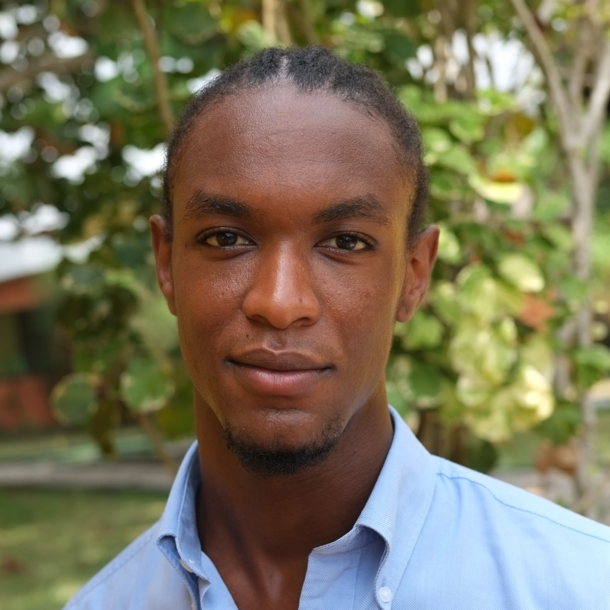
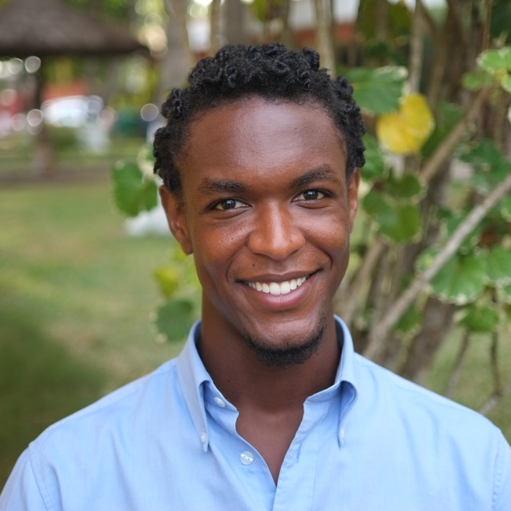

Freesoul-Kofi El Shabazz
BIO
Hey. My name is Freesoul-Kofi. I'm a design engineer, experimental sculptor and multihyphenate creative actively pursuing work in regenerative and restorative design. From products and architecture to culture and history, my research and work focuses on exploring and recreating our relationship with nature in order to use all we have towards generating wholeness of experience for all.
HEADSHOTS


SERVICE OFFERINGS
1. Manufacturing and Design Engineering, Product Design (BS, Northwestern University)
-CAD/CAM (Solidworks/Siemens NX)
-rapid prototyping (3D Printing, etc.)
-injection molding
-cnc [milling]
-rendering (keyshot 8)
-Design Thinking and Doing
2. graphic design
-photoshop
3. Videography/Post Production Editing
-premier pro
4. Photography
- street, portrait, event
5. Web Dev
-html/css
6. Music Production, Mixing/Mastering
- Ableton Live 10 Suite
7. Experimental Sculptural Installations (Conceptual Artist)
- this is where I play with the everything of my experience
8. Mentorship, Tutoring
- science, engineering, design
Freesoul is a:
Generator (see def.)
Explorer (Astronaut)
Brother
Understander (Innerstander)
Mediator
Mentor
Student
Generator (defintion)
A Generator is a person who, through observation, research, and experimentation, develops specific processes by which a general problem can be solved, or general need can be met. To practice Generation means to give impetus to the creation and arrangment of things, events or spaces that continually resolve the forces of any given system of pattern-relationships.
Activity Sectors: Art, Design, Engineering, Architecture, Sociopolitical
Consulting Company: D2E Lab